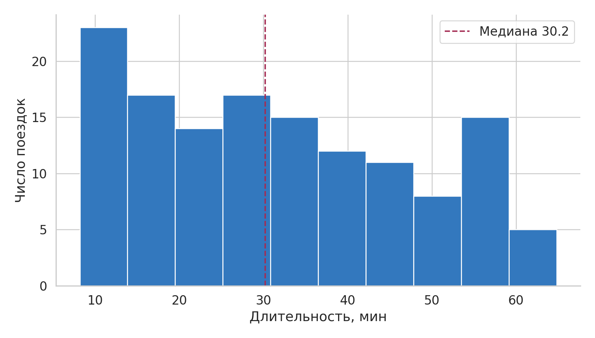
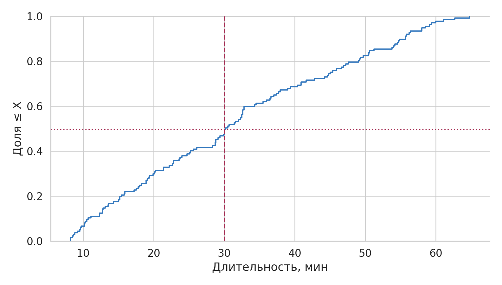
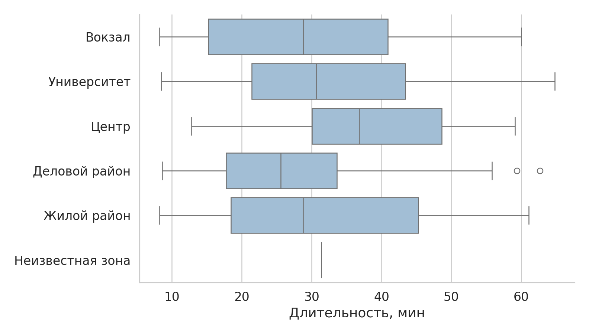
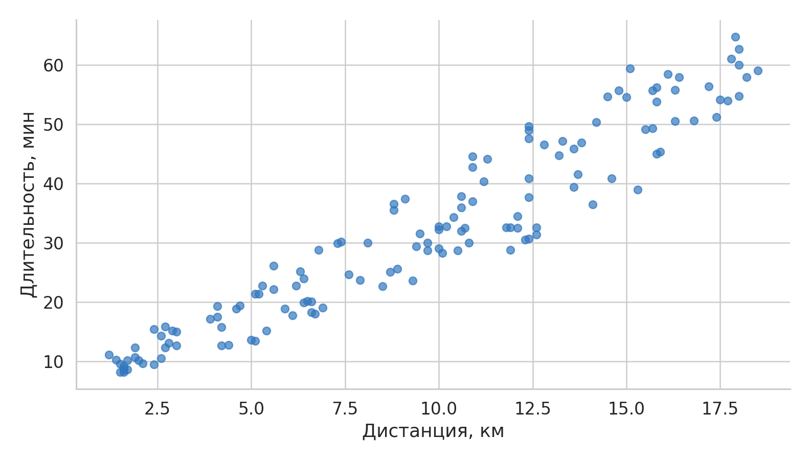
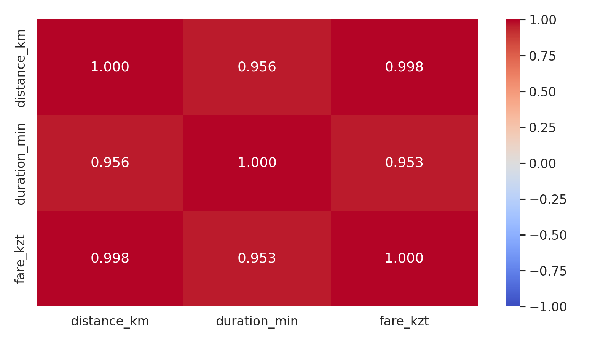
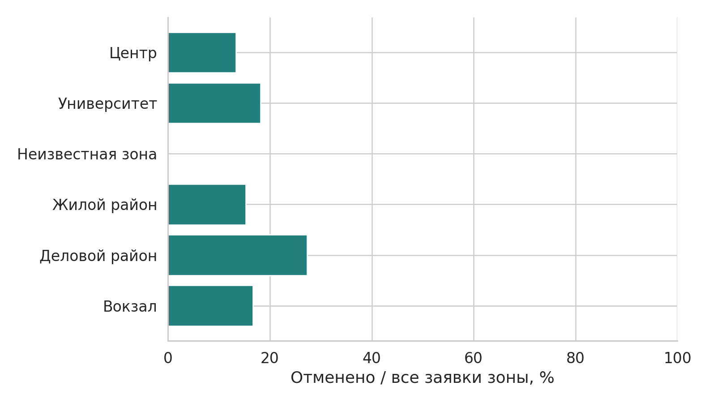
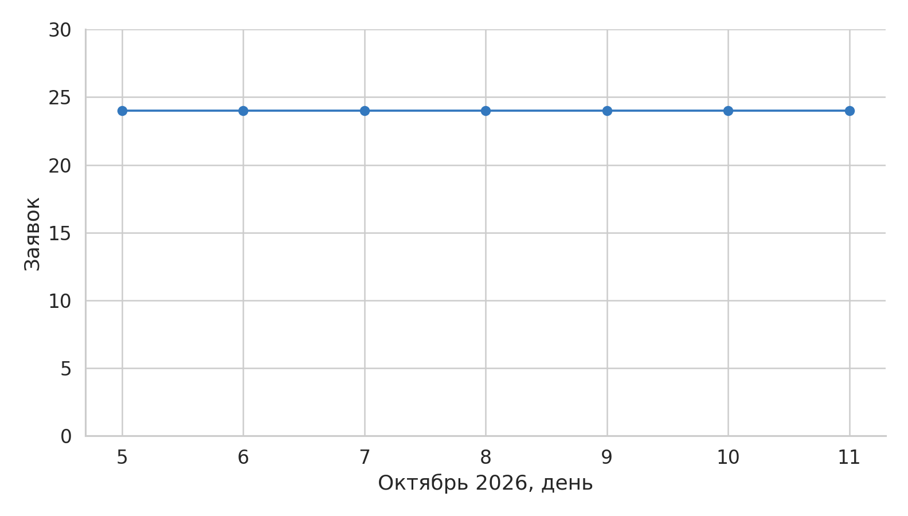

От таблицы
к доказательству.
Визуализация данных, статистика и EDA.
Не просто построить график, а понять, что он позволяет утверждать.
Один кейс. Два занятия.
Проверяемые выводы.
Продолжение Week 02 и Week 03: знакомые фильтры pandas, функции и группировки превращаются в аналитический мини-отчёт. SQL здесь не нужен. Новый статистический материал разобран до его применения.
Занятие 1 · 90 минут
Повторение pandas → качество данных → среднее, медиана и разброс → matplotlib → распределения → практика.
Занятие 2 · 90 минут
Сравнение групп → Pearson и Spearman → корректные доли → временные ряды → Plotly → защита вывода.
Сначала прочитайте вопрос, затем попробуйте предсказать результат, запустите ячейку и объясните расхождение. Код ниже — фрагменты единого процесса: их нужно запускать по порядку в приложенном notebook, начиная с загрузки данных.
City Trips: что означает одна строка
Синтетические заявки на поездки за 5–11 октября 2026.
170 исходных строк. После удаления точных повторов: 168 заявок.
139 завершённых поездок. Известных длительностей: 137.
trip_id: ID заявки. requested_at: время запроса.
status: completed / cancelled. channel: app / phone / web.
distance_km, duration_min, fare_kzt: метрики поездки.
zone_id связывает заявки со справочником зон.
Продолжение Week 02 и Week 03
Уже знакомо: DataFrame, типы, фильтр, пропуски, groupby, merge.
Сегодня: объясняем распределение и выбираем способ сравнения.
Откройте City_Trips_Week04.ipynb.
Выполните сначала импорты и ячейку встроенных данных.
В примерах TRIPS_CSV и ZONES_JSON берутся из этой ячейки.
Каждый следующий пример использует предыдущие переменные.
import pandas as pd
import matplotlib.pyplot as plt
import seaborn as sns
sns.set_theme(style="whitegrid")Подготовка без потери заявок
Точный повтор строки можно удалить после проверки.
Повтор одного ID с разными значениями требует отдельного решения.
Left join сохраняет неизвестную зону Z99.
assert проверяет наше предположение и останавливает код при нарушении.
trips = raw.drop_duplicates().copy()
trips["requested_at"] = pd.to_datetime(
trips["requested_at"], errors="raise")
assert trips["trip_id"].is_unique
joined = trips.merge(zones, on="zone_id",
how="left", validate="many_to_one")
assert len(joined) == len(trips)Пропуски зависят от смысла столбца
У отменённой заявки нет длительности выполненной поездки.
Нельзя подставлять 0 и смешивать её с поездками.
У двух завершённых поездок длительность неизвестна.
Их исключаем только из расчётов, где нужна duration_min.
zone_name = joined["zone_name"]
joined["zone_report"] = zone_name.fillna(
"Неизвестная зона")
joined["channel_report"] = (
joined["channel"].fillna("unknown"))
completed = joined.loc[
joined["status"].eq("completed")].copy()
durations = completed["duration_min"].dropna()Статистика описывает выборку
n: число известных наблюдений в конкретном расчёте.
Среднее: баланс всех значений. Медиана: середина порядка.
Стандартное отклонение: разброс вокруг среднего.
Квартили: границы центральной половины значений.
Одного среднего недостаточно: нужны размер, разброс и график.
durations.describe().round(2)
# count пропускает NaN
# std в pandas использует ddof=1
# 25%, 50%, 75%: квартилиСреднее учитывает каждое значение
Для [10, 20, 30] среднее равно 20.
Для [10, 20, 120] среднее равно 50.
Одно большое значение заметно сдвигает результат.
Среднее полезно для общей нагрузки и суммы.
Единицы среднего совпадают с единицами признака.
x = pd.Series([10, 20, 120])
x.mean() # 50.0
x.sum() / x.count() # 50.0Медиана зависит от порядка
Сначала сортируем значения.
Нечётное n: берём центральное значение.
Чётное n: среднее двух центральных значений.
[10, 20, 120] → медиана 20, среднее 50.
Медиана устойчивее к единичным крайним значениям.
Она не показывает, насколько далеко лежат крайние точки.
x = pd.Series([10, 20, 120])
x.median() # 20.0
pd.Series([10, 20, 30, 80]).median()
# 25.0Стандартное отклонение: масштаб разброса
Отклонения от среднего возводим в квадрат.
Делим сумму квадратов на n−1 и извлекаем корень.
Корень возвращает единицы исходного признака.
Для [10, 20, 30]: s = 10 минут.
Большое s означает большой разброс, но не обязательно ошибки.
x = pd.Series([10, 20, 30])
x.std(ddof=1) # 10.0, выборочная оценка
x.std(ddof=0) # 8.165, описываем весь наборКвартили и IQR
Q1 = 25-й процентиль. Q2 = медиана. Q3 = 75-й процентиль.
IQR описывает размах центральных 50% распределения.
Для небольших выборок методы интерполяции дают разные ответы.
Здесь используем стандартную линейную интерполяцию pandas.
q1 = durations.quantile(0.25)
q3 = durations.quantile(0.75)
iqr = q3 - q1
print(q1, q3, iqr)City Trips: числа перед графиком
Длительности: n = 137 известных значений.
Среднее: 31.76 мин. Медиана: 30.20 мин.
Выборочная std: 15.84 мин.
Q1: 18.30 мин. Q3: 45.00 мин.
IQR: 26.70 мин.
Эти числа описывают учебную выборку завершённых поездок.
Они не оценивают качество городского транспорта.
summary = durations.agg(
["count", "mean", "median", "std"])
print(summary.round(2))Среднее средних может обмануть
Группа A: 2 поездки, средняя цена 1000 ₸.
Группа B: 8 поездок, средняя цена 2000 ₸.
Обычное среднее двух средних = 1500 ₸.
Средняя цена всех поездок = 1800 ₸.
Весом становится число наблюдений, из которых считали среднее.
(2 * 1000 + 8 * 2000) / (2 + 8)
# 1800
completed["fare_kzt"].mean()Среднее или медиана?
Шесть фиксированных длительностей: 10, 12, 14, 16, 18, 20 минут. Седьмая меняется ползунком. Это отдельный демонстрационный пример, не City Trips.
Почему медиана не меняется?
После сортировки центральный, четвёртый элемент равен 16. Изменяется только последний элемент. Среднее использует все значения, поэтому реагирует на каждую минуту.
Вопрос определяет график
Количество по категориям → bar / barh.
Распределение чисел → histogram.
Доля значений до порога → ECDF.
Разброс в нескольких группах → boxplot.
Связь двух чисел → scatter.
Изменение по упорядоченному времени → line.
ID, канал и зона не становятся числовыми признаками от кодирования.
Figure и Axes: два уровня matplotlib
fig: вся картинка, размер и сохранение.
ax: конкретная область графика, оси и подписи.
figsize измеряется в дюймах, dpi влияет на разрешение PNG.
Каждый новый график начинает с новых fig, ax.
fig, ax = plt.subplots(figsize=(8, 4))
ax.plot([1, 2, 3], [10, 15, 12], marker="o")
ax.set(title="Пример", xlabel="День",
ylabel="Заявок")
fig.tight_layout()
fig.savefig("example.png", dpi=180)
plt.show()Количество заявок по каналам
value_counts считает строки в каждой категории.
unknown оставляем видимым: это качество данных.
Столбцы начинаются от нуля, иначе разница выглядит больше.
При длинных категориях удобнее barh.
counts = joined["channel_report"].value_counts()
fig, ax = plt.subplots(figsize=(8, 4))
ax.bar(counts.index, counts.values,
color="#3378BE")
ax.set(xlabel="Канал", ylabel="Заявок",
title="Заявки по каналам")
ax.set_ylim(bottom=0)
fig.tight_layout()Гистограмма показывает интервалы
Ось X: диапазоны длительности.
Ось Y: число поездок в диапазоне.
Высота столбца не является самой длительностью.
Пунктир показывает медиану.
Сначала описываем форму и диапазон.
Потом проверяем объяснение по данным.

bins меняет детализацию картины
Мало интервалов скрывает структуру.
Много интервалов усиливает случайные колебания.
Сравните bins=5, 10 и 20 на тех же данных.
При сравнении групп используйте одинаковые границы интервалов.
fig, ax = plt.subplots(figsize=(8, 4))
ax.hist(durations, bins=10,
color="#3378BE", edgecolor="white")
ax.axvline(durations.median(), color="#A42C53",
linestyle="--", label="Медиана")
ax.set(xlabel="Минуты", ylabel="Поездок")
ax.legend()
fig.tight_layout()ECDF отвечает на вопрос «не дольше X?»
Поездок не дольше 30 минут:
68 / 137 = 49.6%.
Каждая ступенька добавляет наблюдения.
ECDF не требует выбора bins.
Доля относится только к известным длительностям.

Практика 1: распределение стоимости
15 минут самостоятельно + 5 минут обсуждение.
1. Возьмите fare_kzt завершённых поездок.
2. Посчитайте n, mean, median, std, Q1, Q3 и IQR.
3. Постройте гистограмму с 8 и 16 интервалами.
4. Добавьте линии mean и median разными цветами.
5. Напишите два наблюдения и одно ограничение.
Минимум: код запускается, оси с единицами, объяснение своими словами.
fares = completed["fare_kzt"].dropna()
# .mean(), .median(), .std(), .quantile()
# ax.hist(), ax.axvline(), ax.legend()Урок 2 · Сравнение групп и связи
Вопросы для повторения:
Почему отменам нельзя присваивать нулевую длительность?
Почему mean и median могут различаться?
Что изменится, если увеличить bins?
Почему нужно сообщать n?
Группа: размер, центр и разброс
Сравнение только средних скрывает структуру.
count считает известные значения столбца.
size считает строки группы, включая пропуски.
Группа из одной поездки не характеризует всю зону.
by_zone = completed.groupby("zone_report").agg(
rows=("trip_id", "size"),
n=("duration_min", "count"),
median_min=("duration_min", "median"),
mean_min=("duration_min", "mean"),
std_min=("duration_min", "std"))
print(by_zone.round(1))Boxplot сжимает распределение
Линия в коробке: медиана.
Коробка: Q1…Q3.
Усы: крайние наблюдения внутри границ 1.5 IQR.
Отдельные точки за усами: кандидаты на проверку.
Они не автоматически ошибки.
Одна точка в неизвестной зоне не даёт надёжного сравнения.

Границы 1.5 IQR и настройка boxplot
Правило помогает находить необычные значения.
Оно не заменяет проверку единиц, источника и контекста.
whis меняет отображение усов, но не данные.
order позволяет сравнивать зоны по медиане.
order = by_zone.sort_values("median_min").index
fig, ax = plt.subplots(figsize=(10, 5))
sns.boxplot(data=completed, x="duration_min",
y="zone_report", order=order, whis=1.5, ax=ax)
ax.set(xlabel="Минуты", ylabel="Зона")
fig.tight_layout()Scatter: одна точка = одна поездка
X: дистанция. Y: длительность.
Здесь видна положительная связь.
Точки не лежат точно на одной прямой.
Вопросы: есть ли группы, изгиб, крайние точки?
Сначала смотрим scatter, затем коэффициент.

Scatter: код и параметры
dropna оставляет полные пары для двух признаков.
alpha снижает непрозрачность при наложении точек.
s задаёт площадь маркера. hue кодирует категорию цветом.
Легенду при необходимости выносим за оси.
pairs = completed.dropna(
subset=["distance_km", "duration_min"])
fig, ax = plt.subplots(figsize=(8, 5))
sns.scatterplot(data=pairs, x="distance_km",
y="duration_min", hue="zone_report",
alpha=0.7, s=45, ax=ax)
ax.legend(bbox_to_anchor=(1.02, 1),
loc="upper left")
fig.tight_layout()Pearson измеряет линейную связь
r находится от −1 до +1. Знак задаёт направление.
Модуль показывает тесноту именно линейной связи.
r≈0 не исключает нелинейную зависимость.
Для постоянного признака корреляция не определена.
Крайние точки могут сильно изменить r.
r = pairs["distance_km"].corr(
pairs["duration_min"], method="pearson")
print(len(pairs), round(r, 3))Spearman сравнивает ранги
Значения заменяем позициями в отсортированном ряду.
Совпадениям присваиваем средний ранг.
Монотонная связь: при росте X значения Y обычно растут либо обычно уменьшаются.
Связь может быть нелинейной.
Spearman устойчивее к масштабу крайних значений, но не «неуязвим».
rho = pairs["distance_km"].rank().corr(
pairs["duration_min"].rank())
print(round(rho, 3))Heatmap: краткая карта связей
Для честного сравнения здесь берём одни и те же полные строки.
Шкалу закрепляем на −1…+1.
Диагональ равна 1 для непостоянных признаков.
Высокая связь цены и дистанции ожидаема в учебной конструкции.
Это не результат исследования реального рынка.

Корреляции: код и ограничения
По умолчанию pandas может использовать разные пары строк.
Явный dropna делает размер общим для всей матрицы.
Не включаем trip_id и числовые коды категорий.
Высокое r не доказывает причину, пользу или качество модели.
cols = ["distance_km", "duration_min", "fare_kzt"]
corr_data = completed[cols].dropna()
fig, ax = plt.subplots(figsize=(6, 4))
sns.heatmap(corr_data.corr(),
annot=True, fmt=".3f",
vmin=-1, vmax=1, center=0,
cmap="coolwarm", ax=ax)
ax.set_title(f"Pearson, n={len(corr_data)}")
fig.tight_layout()Доля отмен: важен знаменатель
Нужны все заявки зоны, включая отмены.
После фильтра completed число отмен стало бы нулём.
0 из 1 не доказывает надёжность зоны.
На графике показываем долю, рядом в отчёте оставляем n.
Рейтинги малых групп нестабильны.

Доли: расчёт без скрытого фильтра
Boolean True при суммировании считается как 1.
requests: число строк группы. cancelled: сумма True.
Проценты получаем умножением доли на 100.
Проверяем, что группировка не потеряла заявки.
data = joined.assign(
cancelled=joined["status"].eq("cancelled"))
report = data.groupby("zone_report").agg(
requests=("trip_id", "size"),
cancelled=("cancelled", "sum"))
report["cancel_pct"] = 100 * (
report["cancelled"] / report["requests"])
assert report["requests"].sum() == len(joined)Временной ряд требует упорядоченной оси
В учебных данных ровно 24 заявки каждый день.
Это расписание генерации данных.
Из него нельзя сделать вывод о стабильности реального спроса.
В реальной таблице пропущенный день нужно отличать от дня с нулём.

Plotly: интерактивный разбор поездки
Наведение показывает ID и стоимость. Цвет выделяет зону.
Если Plotly не установлен, выполните %pip install plotly в отдельной ячейке.
HTML с include_plotlyjs=True работает без интернета.
Интерактивность не заменяет корректную выборку.
import plotly.express as px
fig = px.scatter(pairs, x="distance_km",
y="duration_min", color="zone_report",
hover_data=["trip_id", "fare_kzt"])
fig.update_layout(xaxis_title="Км",
yaxis_title="Минуты")
fig.write_html("city_trips.html",
include_plotlyjs=True)Практика 2: аналитический мини-отчёт
20 минут. Выберите вопрос: стоимость по каналам или отмены по зонам.
1. Объясните единицу наблюдения и фильтр.
2. Посчитайте размер групп и подходящие статистики.
3. Создайте два разных полезных графика.
4. Сформулируйте вывод с конкретным числом.
5. Укажите ограничение и следующий шаг проверки.
Дополнительно: интерактивный scatter и экспорт CSV.
Хороший вывод можно проверить
Слабо: «В центре всё лучше».
Корректно: «В учебной выборке доля отмен в зоне X составила A/B.
Размер группы B мал, поэтому ранжирование зон требует осторожности».
Наблюдение: что видно в данных.
Гипотеза: возможное объяснение.
Проверка: какие дополнительные данные нужны.
Причину без подходящего исследования не объявляем.
ИИ помогает учиться во время работы
Промпт: «Объясни эту ячейку по строкам и назови, что изменится при bins=20.
Не переписывай весь ноутбук. Дай маленький пример для проверки».
Попросите предложить тест и найти ошибку в знаменателе.
Проверьте ответ запуском кода и ручным расчётом на 3–5 строках.
На защите объясните фильтр, оси, n и один изменённый параметр.
Не загружайте в публичные сервисы персональные или рабочие секреты.
Самопроверка перед защитой
Все ячейки выполняются после Restart & Run All.
Фильтр соответствует вопросу, пропуски не превращены в нули.
Оси имеют названия и единицы, размер групп известен.
Графики не скрывают разницу масштабом или неполными данными.
Коэффициент связи сопровождается scatter и ограничением.
Вы можете поменять параметр и объяснить новый результат.
Защита: 3 минуты рассказ + 2 минуты вопросы.
Справочник функций
pandas: .loc[], .dropna(), .groupby().agg(), .mean(), .median(),
.std(ddof=1), .quantile(), .corr(), .rank(), .size(), .count().
matplotlib: plt.subplots(), ax.bar(), ax.hist(), ax.axvline(),
ax.set(), ax.legend(), fig.tight_layout(), fig.savefig().
seaborn: histplot, ecdfplot, boxplot, scatterplot, heatmap.
Plotly Express: px.scatter(), fig.write_html().
Не запомнить. Объяснить.
Почему 29 отмен нельзя добавить в длительности как нули?
Отмена — не поездка длительностью 0 минут. Она не измеряет тот же процесс. Подмена меняет распределение и занижает среднюю длительность завершённых поездок.
Корреляция близка к нулю. Связи точно нет?
Нет. Pearson описывает линейную связь. Нелинейная зависимость может давать r около нуля. Сначала изучите scatter и контекст.
Как честно сравнить отмены между зонами?
Для каждой зоны делите её число отмен на все её заявки. Показывайте процент вместе с размером группы. Сравнение абсолютных чисел без знаменателя может вводить в заблуждение.
Что делает assert в notebook?
Проверяет предположение: если выражение True, выполнение продолжается; если False, возникает AssertionError. Например, assert trips.trip_id.is_unique останавливает анализ при повторяющихся ID. Это проверка результата предыдущего шага, поэтому она стоит после него. Не используйте assert вместо обязательной проверки внешних данных в production: при python -O проверки отключаются.
Продолжить в коде.
Notebook содержит исходные строки данных, подготовку и последовательные примеры. CSV — уже очищенная и объединённая таблица: это удобный экспорт для исследования, а не замена задания по подготовке.
Данные доступны без Kaggle и ключей API. Для запуска notebook установите pandas, numpy, matplotlib, seaborn и plotly в своё учебное окружение. Иллюстрации на странице подготовлены по тому же набору. Страница не собирает аналитику и не отправляет ваши данные.